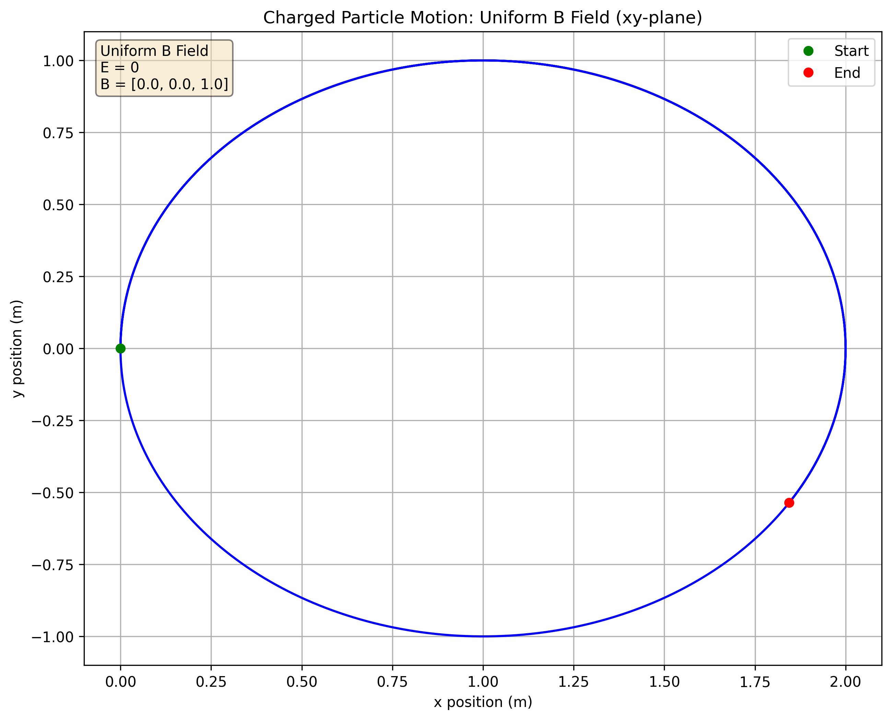
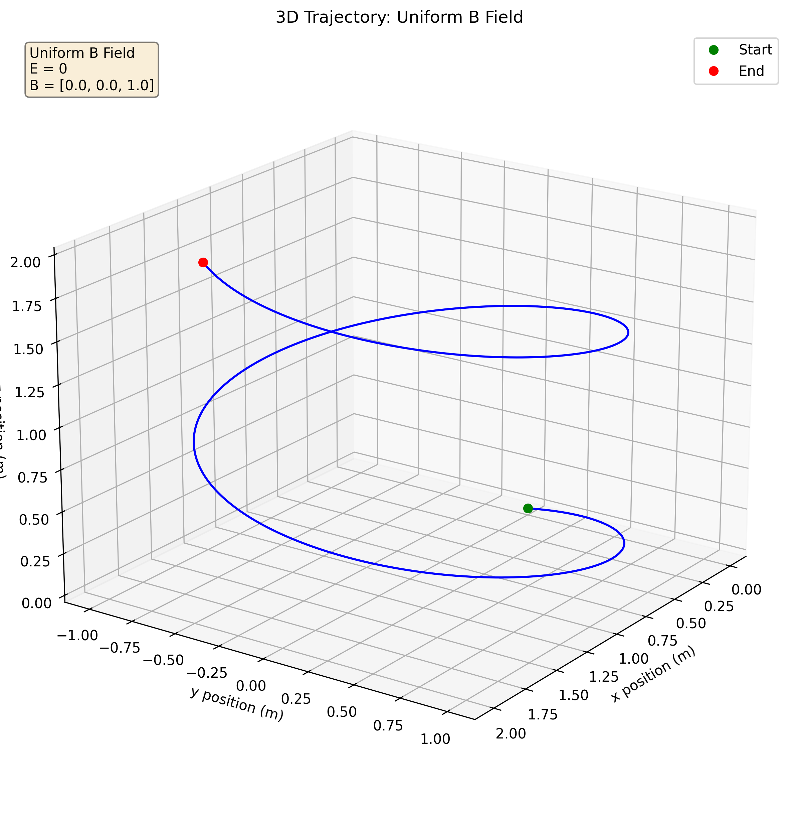
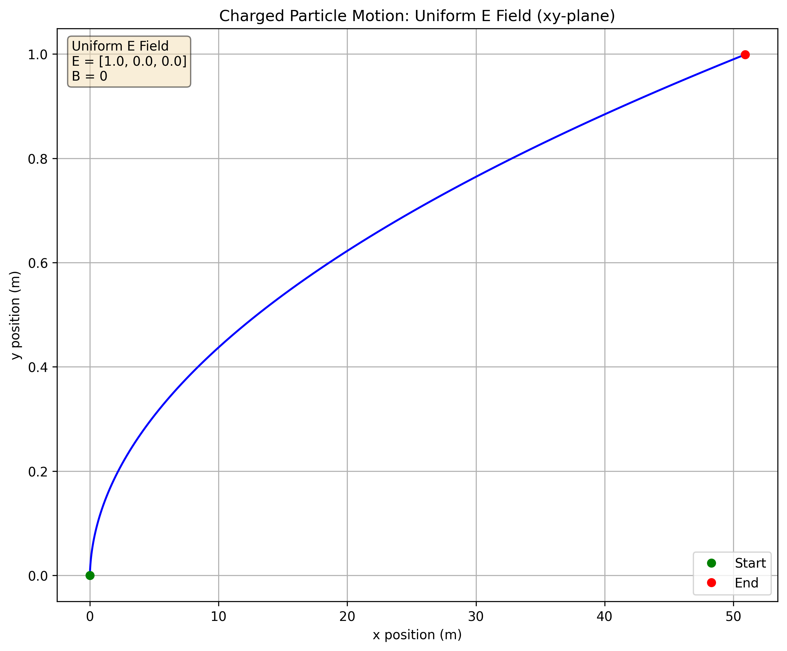
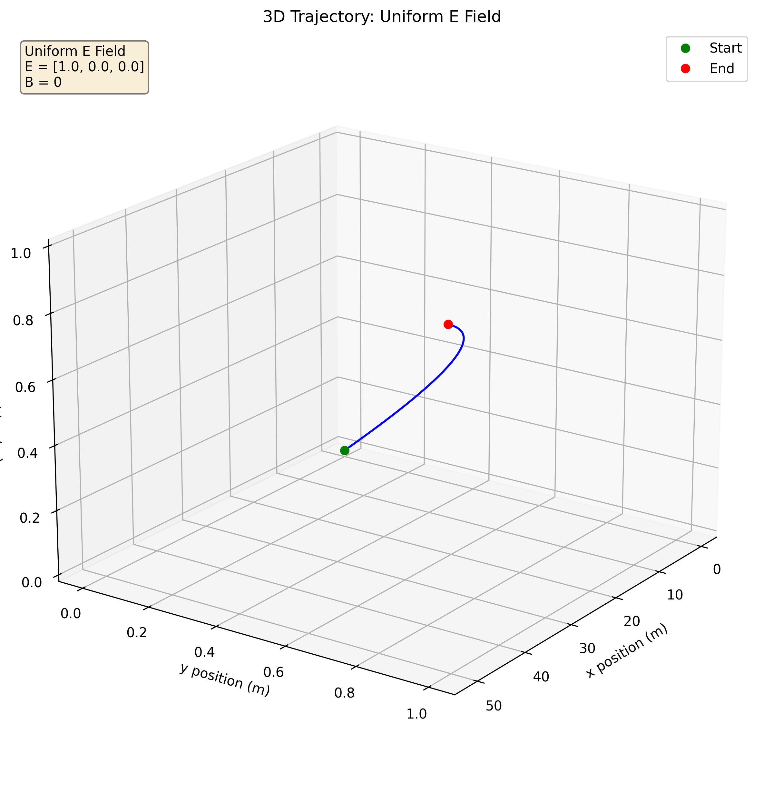
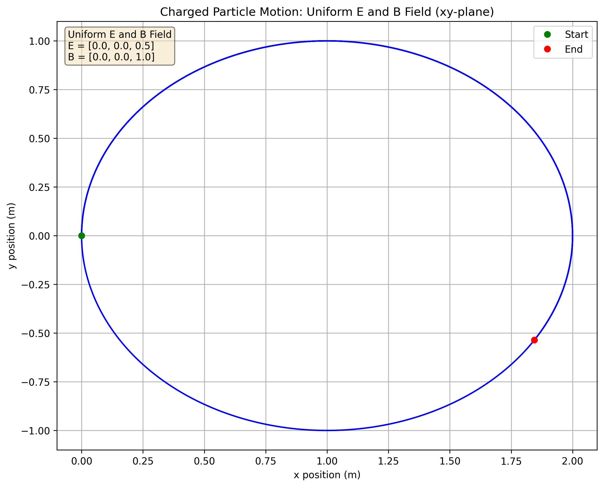
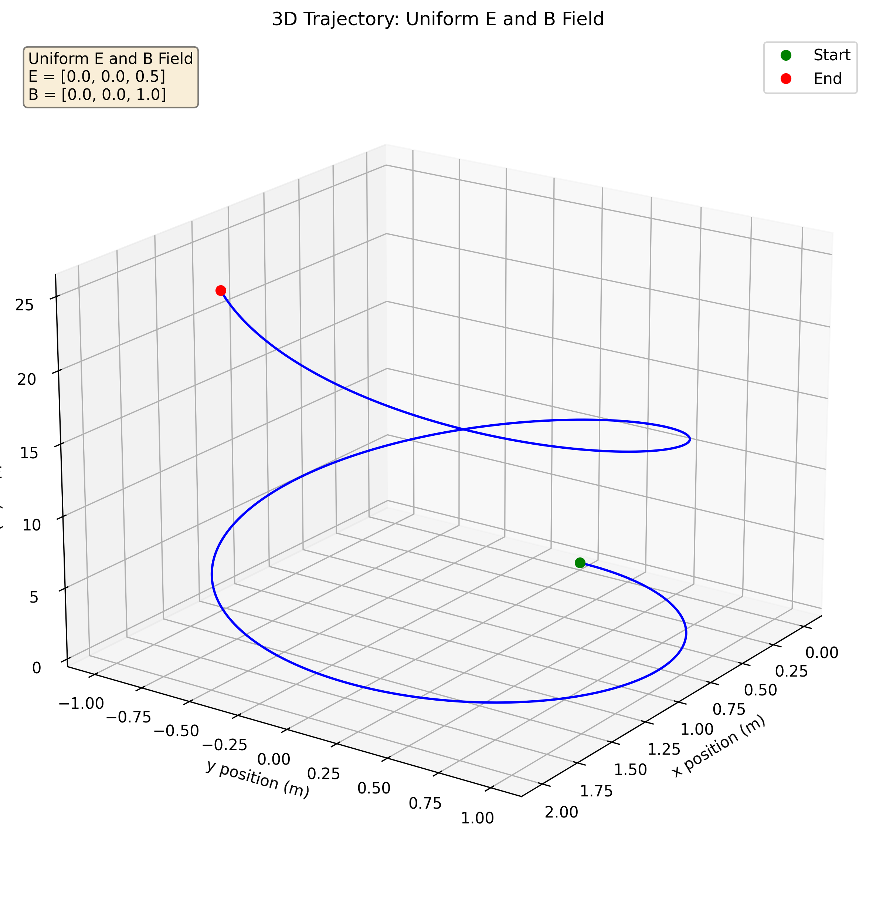
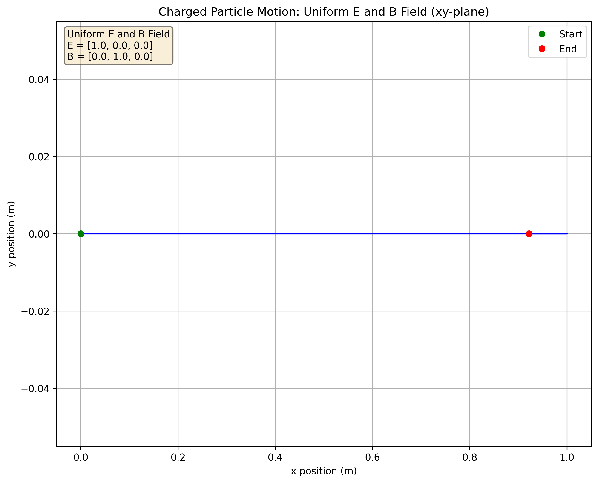
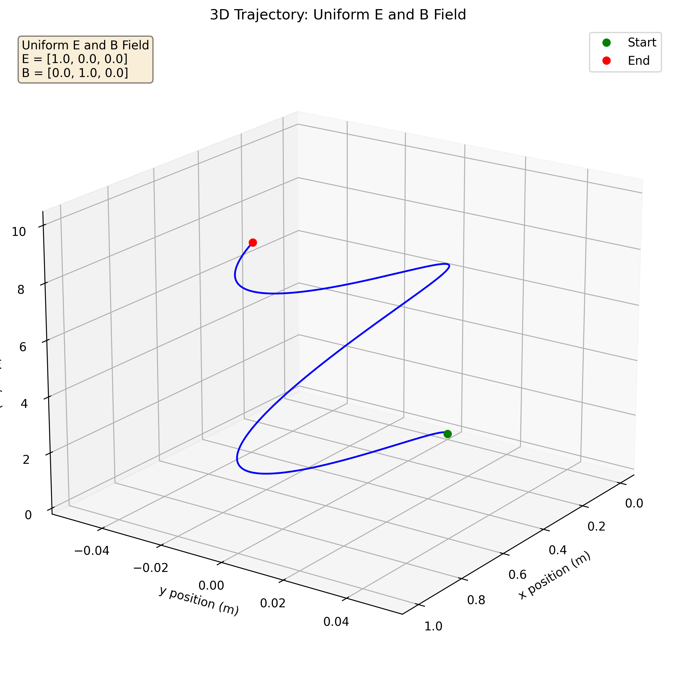

Problem 1
Simulating the Effects of the Lorentz Force
Introduction
The Lorentz force is a fundamental concept in electromagnetism that describes the force experienced by a charged particle moving through electric and magnetic fields. This force is central to numerous technological applications and natural phenomena, from particle accelerators to auroras in the Earth's atmosphere.
The mathematical expression for the Lorentz force is:
where: - \(\mathbf{F}\) is the force (in newtons) - \(q\) is the electric charge of the particle (in coulombs) - \(\mathbf{E}\) is the external electric field (in volts per meter) - \(\mathbf{v}\) is the particle's velocity (in meters per second) - \(\mathbf{B}\) is the magnetic field (in teslas) - \(\times\) denotes the vector cross product
This simulation explores how charged particles behave under different field configurations, demonstrating key principles that govern particle accelerators, mass spectrometers, plasma confinement systems, and more.
Applications of the Lorentz Force
The Lorentz force has numerous practical applications across science and engineering:
-
Particle Accelerators: Devices like cyclotrons, synchrotrons, and linear accelerators use magnetic fields to bend charged particles into circular or spiral paths, while electric fields accelerate them.
-
Mass Spectrometers: These instruments separate ions based on their mass-to-charge ratio by observing how they deflect in magnetic fields.
-
Plasma Confinement: Fusion reactors like tokamaks use magnetic fields to confine hot plasma, keeping the charged particles away from the reactor walls.
-
Magnetohydrodynamic (MHD) Generators: These convert energy from plasma moving through a magnetic field directly into electricity.
-
Hall Effect Thrusters: Used in spacecraft propulsion, these devices use crossed electric and magnetic fields to accelerate ions as propellant.
-
Electron Microscopes: Magnetic fields are used to focus beams of electrons, similar to how optical lenses focus light.
-
Magnetic Traps: Used in research to confine and study charged particles, including antimatter.
Physical Principles and Behavior
The behavior of a charged particle under the Lorentz force depends on the field configuration:
- Uniform Magnetic Field Only:
- Particles move in circular paths perpendicular to the field
- The radius (Larmor radius) is: \(r = \frac{mv_\perp}{|q|B}\), where \(v_\perp\) is the velocity component perpendicular to the field
-
The frequency (cyclotron frequency) is: \(\omega = \frac{|q|B}{m}\)
-
Uniform Electric Field Only:
-
Particles experience constant acceleration in the direction of the electric field (if positively charged) or opposite to it (if negatively charged)
-
Combined Parallel E and B Fields:
-
Particles move in helical paths, combining circular motion with constant acceleration along the field lines
-
Crossed E and B Fields:
- Particles experience a drift perpendicular to both fields
- The drift velocity is: \(\mathbf{v}_d = \frac{\mathbf{E} \times \mathbf{B}}{B^2}\)
Numerical Simulation Approach
To simulate the motion of charged particles, we need to integrate the equations of motion derived from Newton's second law and the Lorentz force:
where \(\mathbf{r}\) is the position vector and \(m\) is the particle's mass.
For numerical integration, we'll use the 4th-order Runge-Kutta method (RK4), which provides a good balance between accuracy and computational efficiency.
Python Implementation
Below is the implementation of our Lorentz force simulator:
import numpy as np
import matplotlib.pyplot as plt
from mpl_toolkits.mplot3d import Axes3D
from matplotlib.animation import FuncAnimation
import os
# Ensure the images directory exists
img_dir = os.path.join("docs", "1 Physics", "4 Electromagnetism", "images")
os.makedirs(img_dir, exist_ok=True)
class LorentzForceSimulator:
"""Simulator for charged particle motion under Lorentz force"""
def __init__(self, q=1.0, m=1.0, dt=0.01, tmax=10.0):
"""
Initialize the simulator.
Parameters:
- q: charge of the particle (C)
- m: mass of the particle (kg)
- dt: time step for simulation (s)
- tmax: maximum simulation time (s)
"""
self.q = q # charge
self.m = m # mass
self.dt = dt # time step
self.tmax = tmax # maximum simulation time
self.t = np.arange(0, tmax, dt) # time array
self.num_steps = len(self.t)
# Initialize arrays for position and velocity
self.r = np.zeros((self.num_steps, 3)) # position: [x, y, z]
self.v = np.zeros((self.num_steps, 3)) # velocity: [vx, vy, vz]
# Field configuration (to be set by specific methods)
self.E = np.zeros(3) # Electric field vector
self.B = np.zeros(3) # Magnetic field vector
self.field_type = "None" # Description of field configuration
def set_initial_conditions(self, r0, v0):
"""
Set initial position and velocity.
Parameters:
- r0: initial position [x0, y0, z0] (m)
- v0: initial velocity [vx0, vy0, vz0] (m/s)
"""
self.r[0] = np.array(r0)
self.v[0] = np.array(v0)
def set_uniform_B_field(self, B):
"""Set a uniform magnetic field."""
self.B = np.array(B)
self.E = np.zeros(3)
self.field_type = "Uniform B"
def set_uniform_E_field(self, E):
"""Set a uniform electric field."""
self.E = np.array(E)
self.B = np.zeros(3)
self.field_type = "Uniform E"
def set_uniform_EB_fields(self, E, B):
"""Set uniform electric and magnetic fields."""
self.E = np.array(E)
self.B = np.array(B)
self.field_type = "Uniform E and B"
def lorentz_force(self, r, v):
"""
Calculate acceleration due to Lorentz force.
Parameters:
- r: position vector [x, y, z]
- v: velocity vector [vx, vy, vz]
Returns:
- acceleration vector [ax, ay, az]
"""
F = self.q * (self.E + np.cross(v, self.B))
a = F / self.m
return a
def rk4_step(self, r, v, dt):
"""
Perform one step of 4th-order Runge-Kutta integration.
Parameters:
- r: current position
- v: current velocity
- dt: time step
Returns:
- new position, new velocity
"""
# Stage 1
a1 = self.lorentz_force(r, v)
k1r = v
k1v = a1
# Stage 2
a2 = self.lorentz_force(r + 0.5*dt*k1r, v + 0.5*dt*k1v)
k2r = v + 0.5*dt*k1v
k2v = a2
# Stage 3
a3 = self.lorentz_force(r + 0.5*dt*k2r, v + 0.5*dt*k2v)
k3r = v + 0.5*dt*k2v
k3v = a3
# Stage 4
a4 = self.lorentz_force(r + dt*k3r, v + dt*k3v)
k4r = v + dt*k3v
k4v = a4
# Combine stages
r_new = r + (dt/6)*(k1r + 2*k2r + 2*k3r + k4r)
v_new = v + (dt/6)*(k1v + 2*k2v + 2*k3v + k4v)
return r_new, v_new
def run_simulation(self):
"""Execute the simulation using RK4 integration."""
for i in range(1, self.num_steps):
self.r[i], self.v[i] = self.rk4_step(self.r[i-1], self.v[i-1], self.dt)
def calculate_parameters(self):
"""Calculate relevant physical parameters based on the simulation."""
results = {
"charge": self.q,
"mass": self.m,
"fields": {
"type": self.field_type,
"E": self.E,
"B": self.B
}
}
# Calculate Larmor radius for magnetic field cases
if np.any(self.B != 0):
B_mag = np.linalg.norm(self.B)
v_perp_initial = np.linalg.norm(np.cross(self.v[0], self.B)) / B_mag
larmor_radius = self.m * v_perp_initial / (abs(self.q) * B_mag)
cyclotron_freq = abs(self.q) * B_mag / self.m
results["larmor_radius"] = larmor_radius
results["cyclotron_frequency"] = cyclotron_freq
# Calculate drift velocity for crossed E-B fields
if np.any(self.E != 0) and np.any(self.B != 0):
B_squared = np.dot(self.B, self.B)
if B_squared > 0: # Avoid division by zero
drift_velocity = np.cross(self.E, self.B) / B_squared
results["drift_velocity"] = drift_velocity
return results
def plot_trajectory_2d(self, plane='xy', title=None, filename=None):
"""
Plot the 2D projection of the particle trajectory.
Parameters:
- plane: which plane to show ('xy', 'xz', or 'yz')
- title: custom title for the plot
- filename: if provided, save to this filename
"""
# Set up axes based on selected plane
planes = {
'xy': (0, 1, 'x', 'y'),
'xz': (0, 2, 'x', 'z'),
'yz': (1, 2, 'y', 'z')
}
if plane not in planes:
raise ValueError(f"Invalid plane '{plane}'. Choose from 'xy', 'xz', or 'yz'")
idx1, idx2, label1, label2 = planes[plane]
# Create the plot
plt.figure(figsize=(10, 8))
plt.plot(self.r[:, idx1], self.r[:, idx2], 'b-', lw=1.5)
plt.plot(self.r[0, idx1], self.r[0, idx2], 'go', label='Start')
plt.plot(self.r[-1, idx1], self.r[-1, idx2], 'ro', label='End')
# Add field information to the plot
if np.any(self.B != 0):
B_str = f"B = [{self.B[0]:.1f}, {self.B[1]:.1f}, {self.B[2]:.1f}]"
else:
B_str = "B = 0"
if np.any(self.E != 0):
E_str = f"E = [{self.E[0]:.1f}, {self.E[1]:.1f}, {self.E[2]:.1f}]"
else:
E_str = "E = 0"
field_text = f"{self.field_type} Field\n{E_str}\n{B_str}"
plt.text(0.02, 0.98, field_text, transform=plt.gca().transAxes,
verticalalignment='top', bbox=dict(boxstyle='round', facecolor='wheat', alpha=0.5))
# Set labels and title
plt.xlabel(f'{label1} position (m)')
plt.ylabel(f'{label2} position (m)')
if title is None:
title = f'Charged Particle Motion: {self.field_type} Field ({plane}-plane)'
plt.title(title)
plt.grid(True)
plt.legend()
# Save the figure if filename is provided
if filename:
save_path = os.path.join(img_dir, filename)
plt.savefig(save_path, dpi=300, bbox_inches='tight')
plt.close()
return save_path
return plt.gcf()
def plot_trajectory_3d(self, title=None, filename=None):
"""
Plot the full 3D trajectory.
Parameters:
- title: custom title for the plot
- filename: if provided, save to this filename
"""
fig = plt.figure(figsize=(12, 10))
ax = fig.add_subplot(111, projection='3d')
# Plot the trajectory
ax.plot(self.r[:, 0], self.r[:, 1], self.r[:, 2], 'b-', lw=1.5)
ax.plot([self.r[0, 0]], [self.r[0, 1]], [self.r[0, 2]], 'go', label='Start')
ax.plot([self.r[-1, 0]], [self.r[-1, 1]], [self.r[-1, 2]], 'ro', label='End')
# Set labels
ax.set_xlabel('x position (m)')
ax.set_ylabel('y position (m)')
ax.set_zlabel('z position (m)')
# Add field information
if np.any(self.B != 0):
B_str = f"B = [{self.B[0]:.1f}, {self.B[1]:.1f}, {self.B[2]:.1f}]"
else:
B_str = "B = 0"
if np.any(self.E != 0):
E_str = f"E = [{self.E[0]:.1f}, {self.E[1]:.1f}, {self.E[2]:.1f}]"
else:
E_str = "E = 0"
field_text = f"{self.field_type} Field\n{E_str}\n{B_str}"
ax.text2D(0.02, 0.98, field_text, transform=ax.transAxes,
verticalalignment='top', bbox=dict(boxstyle='round', facecolor='wheat', alpha=0.5))
# Set title and add a grid
if title is None:
title = f'3D Trajectory: {self.field_type} Field'
ax.set_title(title)
ax.grid(True)
ax.legend()
# Adjust the viewing angle
ax.view_init(elev=20, azim=35)
# Save the figure if filename is provided
if filename:
save_path = os.path.join(img_dir, filename)
plt.savefig(save_path, dpi=300, bbox_inches='tight')
plt.close()
return save_path
return fig
# Function to run each scenario and generate visualizations
def run_and_visualize_scenario(scenario_name, params):
print(f"Running scenario: {scenario_name}")
sim = LorentzForceSimulator(q=params['q'], m=params['m'], dt=params['dt'], tmax=params['tmax'])
sim.set_initial_conditions(params['r0'], params['v0'])
# Set fields based on scenario type
if scenario_name == "Uniform B Field":
sim.set_uniform_B_field(params['B'])
elif scenario_name == "Uniform E Field":
sim.set_uniform_E_field(params['E'])
elif scenario_name == "Parallel E and B Fields":
sim.set_uniform_EB_fields(params['E'], params['B'])
elif scenario_name == "Crossed E and B Fields":
sim.set_uniform_EB_fields(params['E'], params['B'])
# Run the simulation
sim.run_simulation()
# Calculate relevant parameters
params_result = sim.calculate_parameters()
# Generate plots
filename_base = scenario_name.lower().replace(" ", "_")
# 2D plots for each plane
xy_plot = sim.plot_trajectory_2d(plane='xy', filename=f"{filename_base}_xy.png")
xz_plot = sim.plot_trajectory_2d(plane='xz', filename=f"{filename_base}_xz.png")
yz_plot = sim.plot_trajectory_2d(plane='yz', filename=f"{filename_base}_yz.png")
# 3D plot
plot_3d = sim.plot_trajectory_3d(filename=f"{filename_base}_3d.png")
# Return the simulator and results for further analysis
return {
"simulator": sim,
"parameters": params_result,
"plots": {
"xy": xy_plot,
"xz": xz_plot,
"yz": yz_plot,
"3d": plot_3d
}
}
# Main function to run all scenarios
def main():
# Define common parameters
base_params = {
'q': 1.0, # charge in C
'm': 1.0, # mass in kg
'dt': 0.01, # time step in s
'tmax': 10.0, # max simulation time in s
}
# Scenario 1: Uniform Magnetic Field (circular motion)
uniform_B_params = base_params.copy()
uniform_B_params.update({
'r0': [0.0, 0.0, 0.0], # initial position
'v0': [0.0, 1.0, 0.2], # initial velocity
'B': [0.0, 0.0, 1.0] # magnetic field along z-axis
})
# Scenario 2: Uniform Electric Field (accelerated motion)
uniform_E_params = base_params.copy()
uniform_E_params.update({
'r0': [0.0, 0.0, 0.0],
'v0': [0.1, 0.1, 0.1],
'E': [1.0, 0.0, 0.0] # electric field along x-axis
})
# Scenario 3: Parallel E and B Fields (helical motion)
parallel_EB_params = base_params.copy()
parallel_EB_params.update({
'r0': [0.0, 0.0, 0.0],
'v0': [0.0, 1.0, 0.1],
'E': [0.0, 0.0, 0.5], # electric field along z-axis
'B': [0.0, 0.0, 1.0] # magnetic field along z-axis
})
# Scenario 4: Crossed E and B Fields (drift motion)
crossed_EB_params = base_params.copy()
crossed_EB_params.update({
'r0': [0.0, 0.0, 0.0],
'v0': [0.0, 0.0, 0.5],
'E': [1.0, 0.0, 0.0], # electric field along x-axis
'B': [0.0, 1.0, 0.0] # magnetic field along y-axis
})
# Run all scenarios
scenarios = {
"Uniform B Field": uniform_B_params,
"Uniform E Field": uniform_E_params,
"Parallel E and B Fields": parallel_EB_params,
"Crossed E and B Fields": crossed_EB_params
}
results = {}
for name, params in scenarios.items():
results[name] = run_and_visualize_scenario(name, params)
return results
if __name__ == "__main__":
main()
Simulation Results and Analysis
Let's examine the simulation results for each field configuration:
1. Uniform Magnetic Field
In a uniform magnetic field, a charged particle experiences a force perpendicular to both its velocity and the magnetic field. This results in circular motion in the plane perpendicular to the field.

Figure 1: Motion in the XY plane with a uniform magnetic field in the Z direction, showing the characteristic circular path.

Figure 2: 3D trajectory showing helical motion due to the initial velocity component parallel to the magnetic field.
Key Observations: - The particle moves in a circle in the plane perpendicular to the magnetic field - The radius of the circle (Larmor radius) depends on the particle's mass, charge, velocity perpendicular to the field, and the field strength - Any velocity component parallel to the field is unaffected, resulting in helical motion in 3D
Applications: - This principle is used in cyclotrons and synchrotrons to keep particles in circular paths - Mass spectrometers use this effect to separate ions by their mass-to-charge ratio
2. Uniform Electric Field
A charged particle in an electric field experiences a force parallel to the field (or anti-parallel, depending on the charge). This results in constant acceleration, similar to gravitational motion.

Figure 3: Motion in the XY plane with a uniform electric field in the X direction, showing accelerated motion.

Figure 4: 3D trajectory showing parabolic motion due to constant acceleration in the field direction.
Key Observations: - The particle accelerates in the direction of the electric field (for positive charge) - The trajectory is a parabola, similar to projectile motion under gravity - The acceleration is directly proportional to the field strength and inversely proportional to the particle's mass
Applications: - Linear accelerators use electric fields to accelerate particles to high energies - Cathode ray tubes in old TVs use electric fields to accelerate electrons - Ion thrusters for spacecraft propulsion use electric fields to accelerate ions
3. Parallel Electric and Magnetic Fields
When electric and magnetic fields are parallel, the particle experiences both circular motion from the magnetic field and acceleration along the field direction from the electric field.

Figure 5: Motion in the XY plane with parallel electric and magnetic fields in the Z direction, showing the circular component of motion.

Figure 6: 3D trajectory showing accelerated helical motion due to combined fields.
Key Observations: - The particle follows a helical path with increasing pitch - The circular motion is due to the magnetic field - The acceleration along the field direction is due to the electric field - The helix radius remains constant if the velocity perpendicular to the field doesn't change
Applications: - Magnetrons used in microwave ovens employ this principle - Some types of plasma confinement devices use parallel fields - Certain configurations of particle accelerators
4. Crossed Electric and Magnetic Fields
When electric and magnetic fields are perpendicular to each other, charged particles experience a drift motion perpendicular to both fields.

Figure 7: Motion in the XY plane with crossed electric and magnetic fields, showing the E×B drift.

Figure 8: 3D trajectory showing the combined effect of circular motion and drift.
Key Observations: - The particle exhibits a drift motion in the direction perpendicular to both fields - The drift velocity is \(\mathbf{v}_d = \frac{\mathbf{E} \times \mathbf{B}}{B^2}\), which is independent of the particle's charge, mass, or initial velocity - The trajectory shows a cycloid-like pattern due to the combination of circular motion and drift
Applications: - Hall effect thrusters use crossed fields for spacecraft propulsion - Mass spectrometers may use crossed fields to select ions - E×B drift is important in plasma physics and fusion research - Velocity filters use this principle to select particles with specific velocities
Applications to Real-World Systems
1. Cyclotrons and Particle Accelerators
The circular motion in a magnetic field is the foundation of cyclotrons, which accelerate charged particles using a combination of magnetic fields for circular motion and oscillating electric fields for acceleration. The simulation of uniform magnetic fields demonstrates the basic principle behind these accelerators.
In a cyclotron: - Particles are injected near the center - A uniform magnetic field keeps them in a circular path - An oscillating electric field across a gap accelerates them each time they cross it - As particles gain energy, their radius increases until they exit the machine
2. Magnetic Bottle and Plasma Confinement
The behavior of charged particles in non-uniform magnetic fields (not shown in our simulations) leads to the concept of magnetic mirrors or bottles. These are used to confine plasma in fusion research.
The principle is that: - A charged particle moving into a region of increasing magnetic field will experience a force that slows and eventually reverses its motion along the field line - By creating magnetic field configurations that increase in strength at both ends, particles can be trapped in a "bottle" - This is crucial for confining the hot plasma needed for nuclear fusion
3. Hall Effect Thrusters
Our simulation of crossed E and B fields illustrates the principle behind Hall effect thrusters, which are used for spacecraft propulsion.
In a Hall thruster: - Electrons are trapped in a crossed E×B configuration, creating a Hall current - This current ionizes the propellant gas - The electric field accelerates the ions out of the thruster, providing thrust - The E×B drift that we observed is central to the operation of these devices
Extending the Simulation
The current simulation could be extended in several ways to explore more complex phenomena:
-
Non-uniform fields: Implementing spatially varying electric and magnetic fields to study magnetic mirrors, magnetic bottles, and more complex plasma confinement systems.
-
Multiple particles: Simulating the motion of multiple particles to study collective behavior, such as plasma oscillations and instabilities.
-
Relativistic effects: Incorporating relativistic corrections for high-speed particles, which are important in high-energy accelerators.
-
External forces: Adding additional forces such as gravity or collisions with other particles.
-
Time-varying fields: Implementing time-dependent electric and magnetic fields to study acceleration mechanisms and wave-particle interactions.
Conclusion
The Lorentz force is a fundamental concept that governs the behavior of charged particles in electromagnetic fields. Through numerical simulations, we've explored how particles behave in various field configurations:
- Uniform magnetic fields produce circular or helical motion
- Uniform electric fields cause constant acceleration
- Parallel E and B fields result in accelerating helical trajectories
- Crossed E and B fields lead to drift motion perpendicular to both fields
These simulations provide insight into the working principles of numerous technological applications, from particle accelerators to space propulsion systems. The Python implementation offers a flexible foundation for further exploration and can be extended to study more complex electromagnetic phenomena.
The electromagnetic force, represented by the Lorentz force equation, is one of the fundamental forces of nature, and understanding it is essential for applications ranging from microscopic particle physics to large-scale astrophysical phenomena.